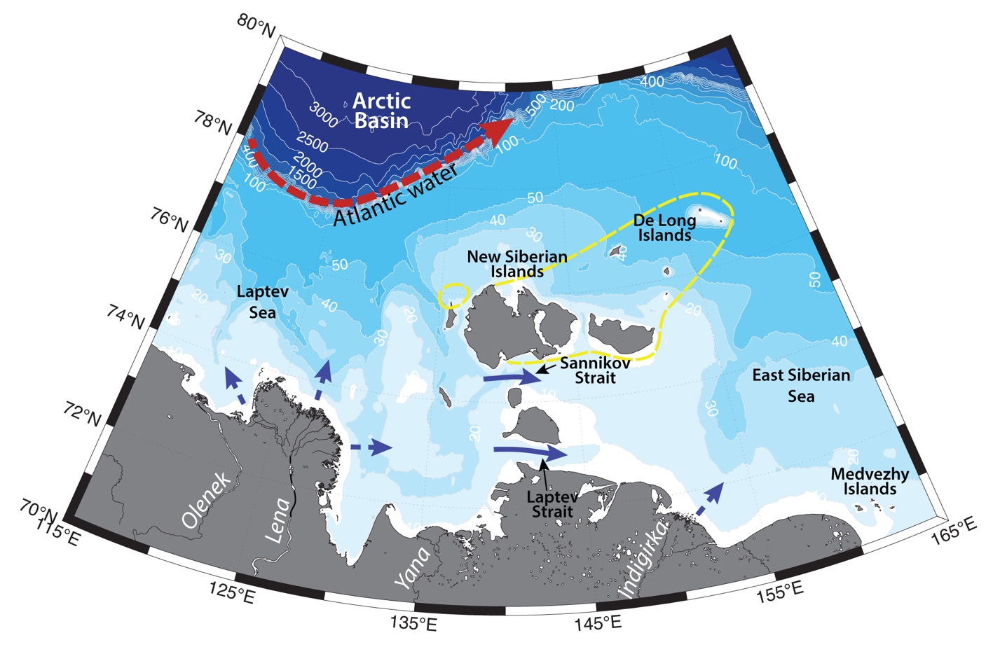

Schematic water circulation patterns and geographical place names in the New Siberian and De Long Islands region. Dashed line marks the studied region.
The region of New Siberian and De Long islands is situated on the vast and shallow (~ 52 m deep) East Siberian Shelf. Hydrography of the region is determined by the fresh surface Arctic waters, extensive sea ice cover, New Siberian Polynya, as well as influenced by Lena River discharge and Atlantic Water boundary current in the Arctic Basin.
Due to rather shallow depth the water column is usually well mixed, especially during wintertime, when the temperature is close to freezing point. During summertime the surface layer warms up to 1 °С, and freshen under the influence of meltwater and freshwater discharge from Lena river (S = ~ 22-25; discharge of ~530 km3 annualy; e.g. Janout et al., 2015).). Deep waters remain cold and saline (S = ~30). Fresh and cold surface Arctic waters, originating from the ice melting, are advected into the region from the north (e.g. (Dobrovolskyi, Zalogin, 1982; Dmitrenko et al., 2005b).
New Siberian and De Long islands are surrounded by land fast ice, which freezes up in October and stays in the area until July (e.g. Pavlov et al., 1996; Saveleva et al., 2008). During certain years, the area was ice-covered during the whole yea, but during years with reduced ice coverage, these seas can be totally free of ice at the end of August– beginning of October. Flaw leads form in between land fast ice and mobile ice of the Arctic Basin.
In general, an eastward flow of riverine waters is believed to exist in the East-Siberian Sea. As a result, waters of the sea are involved in a cyclonic circulation. Due to shallow depth, hydrographic structure of the sea is prone to large variability because of the atmospheric forcing. Many studies have addressed the redistribution of surface waters due to atmospheric forcing in the Siberian seas (e.g. Shpaikher et al., 1972; Dmitrenko et al., 2005a; Dmitrenko et al., 2008; Saveleva et al., 2008). In general, it is believed, that with high pressure and anticyclonic circulation dominating in the central Arctic there is a northward, and in some cases – westward, propagation of river plumes, and cyclonic circulation causes eastward flow along the coastline. As such, in the area of New Siberian Islands the currents can be directed both eastwards and westwards (Dobrovolskyi, Zalogin, 1982).
One of the main features, determining the high biological productivity and concentration of marine life in the region is Great Siberian Polynya. It is a system of polynyas, which stretches across the whole sea and also encompasses (according to various studies) Eastern Severnaya Zemlya Polynya, East Taymyr Polynya, Anabar Lena Polynya, Northern New Siberian Polynya, Western New Siberian Polynya and Eastern New Siberian Polynya (e.g. Dmitrenko et al., 2005b). This polynya is known to be a recurring phenomenon and may be up to 200 km wide (Dmitrenko et al., 2005b). It produces cold (T<–1.6 °С) and salty (S>34) bottom waters for the Siberian shelf and Arctic Ocean due to convective overturning, and induce intensive ice formation, that later gets involved into the Transpolar Drift (Martin and Cavalieri, 1989; Winsor and Bjo¨rk, 2000; Eicken et al., 1997; Alexandrov et al., 2000). Polynyas are known regions of high biological productivity (e.g. Dmitrenko et al., 2010b).
Atlantic Water (AW, T > 0 -1.26°C, 𝑆 > 33.64 psu), lying ~100-160 m beneath the shelfbreak, are usually brought onto the Arctic shelf via upwelling events (e.g. Pisareva et al., 2015a,b, 2019). In the Eurasian Basin, the lower TS boundary of AW is 0 °C, but in the Pacific Arctic the boundary between the Pacific and Atlantic waters is usually taken as the depth of maximum Ertel potential vorticity (Nikolopoulos et al., 2009), as AW is substantially cooled on its long way from the Fram Strait towards Pacific Arctic (Rudels et al., 2004). These waters may contribute to ice melting and polynya formation, as well as affect the bottom layer (Dmitrenko et al., 2010), bring Atlantic species and some nutrients as well.